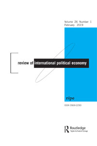
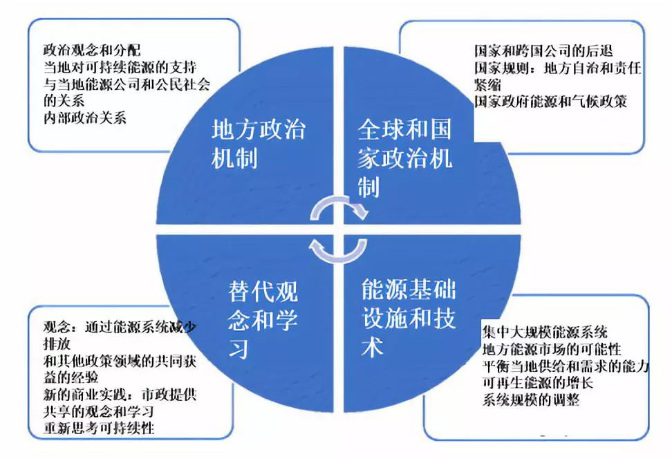

收录于合集

作品简介
【作者】
Caroline Kuzemko，华威大学副教授。研究兴趣包括可持续能源转型的政治经济学、不同层次（国际、国家和地方）的能源政治和政策、以及观念、制度与变革。
【 编译】 李玉婷（国政学人编译员，中国人民大学国际关系学院）
【校对】 王泽尘
【审核 】 赵雷
【排版】 王国伟
【 来源 】 Caroline Kuzemko (2019) Re-scaling IPE: local government, sustainable energy and change, Review of International Political Economy ,26:1,80103,
期刊介绍

Review of International Political Economy, 国际政治经济学评论，创立于1994年，是一本以国际政治经济学为主要内容的同行学术评审杂志。该刊2018年的影响因子为2.800。
IPE 的尺度重组：地方政府、可持续能源与变革
Re-scaling IPE: local government, sustainable energy and change
Caroline Kuzemko
内容提要
可持续能源已成为一个新的政策领域，这部分是由于政治上更加接受减少温室气体排放的必要性。地方政府被认为是潜在的重要角色。结合能源国际政治经济学、政治地理学、新制度主义和社会技术转型， 本文建立了一个概念框架，用以分析与各种因素相关的地方可持续能源政策 的 制定。 这一框架认为地方政府本身就是行为者，而不是全球或国家规则的 “ 接受者 ” ，探讨了能源系统的政策和 物质（ material，文中一般指能源系统的实际情况）的关系 ，考虑对变革有重要影响的观念、竞争和学习的方式。 ****这种方法认识到内嵌的制度和基础设施对地方决策的特定影响，也使我们能够更好地理解政治尺度重组和能源规模调整对其在国家和全球范围内影响政治辩论的能力的影响力。最后，作者呼吁国际政治经济学需要更多地考虑部门的具体情况以及地方尺度。
【编者按】
尺度（scale）是地理研究中的一个重要概念。全球化背景下，地理空间呈现出流动性和可塑性的特点，因此需要通过尺度这一概念将空间（space）区别为可识别的地方（place）和社会单元。尺度既包括绝对空间的涵义，也包括其中特定的社会关系。尺度的重组（rescaling）涉及到权力和控制力在不同尺度之间的变动。比如国家的尺度重组包括将权力上移（scaling up）到区域组织或下移（scaling down）到地方政府。原文的re-scaling一方面是地方的尺度重组，另一方面是能源系统的规模调整。
参考文献：殷洁,罗小龙.尺度重组与地域重构:城市与区域重构的政治经济学分析[J].人文地理,2013,28(02):67-73.
文章导读
一、 简介 ****
《巴黎协定》使世界上大多数国家承诺致力于减少温室气体排放。可持续的能源政策被视为实现目标的必要条件。但是可持续能源是一个新的政策领域，使用政治手段重新塑造深度内嵌的能源系统的任务无比艰巨。因此，尽管越来越多的人认为国家需要在能源转型中发挥中心作用，但政策制定者仍在学习如何实现可持续变化。与此同时，在相关政策和学术辩论中，要求地方行动的呼声再次出现。 本文致力于建立一个框架，以分析不断扩大的地方政府可持续能源政策领域，其中明确考虑了标量 （ scalar） 、政治和物质因素。
通过建立这样的一个框架，我们可以从能源国际政治经济学中了解很多关于影响可持续能源政策制定的因素，并可以从政治地理学中汲取很多关于城市和气候变化的知识，以了解影响当地能源政策制定的因素。小众但新兴的能源国际政治经济学在转型问题上吸引我们关注可持续能源作为政策领域的深刻政治性质和争议性质，尤其是与限制国家行动的更广泛政治环境相关。 目前国际政治经济学已经瞄准国家决策过程，但是对地方 层面的 角色缺少深刻的认知。 地方政府如何成为重要的可持续能源政策的参与者？本文致力于建立一个分析框架既侧重于地方决策，又可以更多地考虑具体部门的因素。 首先，本文不局限于静态环境，而是在更广泛的竞争和变革过程中分析地方政府的决策制定。此处运用了建构主义的方法，了解政策变化的过程以及其中的替代观念、挑战和学习的重要作用。其次，本文考虑某些物质性因素对地方乃至国家可持续能源政策制定过程的影响。本文主要讨论了社会技术转型（STT）研究，能源政策可以而且确实对能源系统的物质方面具有影响，同时也展望了因规模调整而在能源系统中为地方政府带来的新机遇。最后，本文将重点更多地放在理解地方政府决策者自身的角色上。
通过建立该框架，本文更多地考虑了地方政治的尺度重组和能源系统的规模调整，但更重要的是揭示了其对可持续能源政策的重要性。具体而言，这些调整使地方政府能够进行各种形式的政治和技术学习，而地方政府又利用这些学习来提高地方在可持续能源方面的政治能力和合法性。地方行动、想法和学习，然后反馈到更广泛的政治变革进程，并重塑能源国际政治经济学。本文认为需要更好地将地方层次纳入国际政治经济学的分析。
二、 地方政府与可持续能源背景 ****
本节为分析地方政府的可持续能源政策奠定了框架基础。地方政府是指国家以下的各级政府。由于缺少能源国际政治经济学和地方政策制定的研究，本文借鉴了城市和气候变化领域的已有成果，确定了地方的能力和责任，包括其与全球和国家政治因素的关系。接着，本节转向能源国际政治经济学和社会技术转型的研究，以更具体地描述可持续能源政策制定者所面临的选择，同时明确国家能源政策和能源系统的物质方面对地方政府选择和行动的重要性。
2.1 地方的能力、责任和政治背景
20世纪90年代地方的环境活动激增。一些地方政府在地方治理方面发挥了更大的作用，尽管基数较低，而另一些地方政府也开始与其他城市和地区发展跨国联系。国际政治经济学领域有关地方政府和气候变化的研究兴起，比如将地方认为是可供替代的观念或抵制经济全球化形式的场所。但有关城市可持续性的早期分析，尤其是关于地方政府采取的技术措施，被认为过于局限。部分学者认为分析需要迈出超越地方作为参照系的一步，考虑更广泛的政治背景。2000年后出现了一系列文献将分析的重点放在了地方与国家关系及其对地方政策能力的影响上。其中，地方政府和国家之间的关系通常表现为国家对地方的纵向的影响模式。比如国家宪法或法律安排会影响地方的自治程度等。
显然，根据国家政治结构中规定的责任和义务以及自治程度，地方的权力和责任有很大的差异。比如与英国的单一制和较低的地方自治程度相比，联邦制的德国各州的政治和财政自治权相对较大。值得注意的是，只有在某些国家/地区中，地方政府才被要求承担某些具体的气候变化或可持续能源的责任。比如在中国，城市的任务是执行国家和省级的碳强度排放目标。而在英国，国家定义的地方责任随着时间的流逝逐渐消失。确实，如果国家政府希望地方政府完成气候变化任务，那么新责任需要相对应的额外资源。但这也意味着，许多地方对气候变化的政治反应是自愿的。
尽管（不同制度下）规定的（应对）气候变化的责任多种多样，但大多数地方政府在规划、公共交通、道路和交通拥堵、环境、废物以及维护自己的房地产等领域拥有权力。其中许多领域与减缓气候变化有关，因此一定程度的能力可以为当地的可持续行动提供机会。
国家政治规则对于税收的征收、地方和国家之间的财政资源分配方式以及地方财政能力也有重要影响。某种程度上这是非常重要的，因为必须有足够的财政资源规模以实现设想的可持续政策议程。
此外，地方政府采取可持续行动的能力通常也与获取的知识型人力资源有关。例如，气候变化政策制定者需要拥有一定程度的专业知识，但这在地方政府中并非总是如此。但是，地方政府有机会加入跨国网络，在该网络中可以通过共享的网络和资金来获得专业知识和新观念。
尽管不同国家之间以及各国内部的地方政府之间的情况各异，但是就地方政府缺乏足够的能力来实现可持续发展目标这一点已经达成了共识。 具体而言，地方政府的能力受到人员、财政资源、决策自主权特别是某些法规或税收自主权以及有关采取行动的知识限制。 **** 这些限制条件又与更广泛的国家和全球的政治环境相关。 ****
地方政治被认为受到全球和国家新自由主义改革的路径依赖的限制和制约。这部分是因为它们被激励去竞争不同地区之间的有限资源。因此，地方行为体包括政府被描述成新自由主义的再生产、突变和不断重组的被动参与者或主动代理人。新自由改革中，一些服务和管辖权下放到市政府，但是紧缩的措施却使得可用于这些职责的资源减少。比如紧缩的措施使得西班牙、意大利和英国的地方政府削减公共部门预算并减少公共服务，以意大利为例，这导致了地方自治的削弱。在这种情况下，地方政府将资源专用于应对气候变化变得更加困难，特别是当这不是既定职责或被视为核心的政治目标。更普遍地，新自由主义鼓励将责任从公共部门转移到私营部门。这使得地方政府在实施气候变化战略时越来越依赖于企业和非政府组织的横向的网络关系。
2.2 政治和物质背景下的可持续能源
本节关注地方政策制定者在可持续能源领域所面临的各种选择而不是更加宽泛的气候变化缓解。作为一个新的政策领域，各级决策者面临着各种各样的重要问题和选择，尤其是关于如何在确保可负担和能源供应安全的同时，实现可持续的变化。鉴于（能源）供应安全一直是数十年来的核心政治问题，部分原因在于能源在现代政治经济中的核心地位，这是一项艰巨的任务。
可持续能源政策已经有三个主要类别：目标设定、侧重于能源生产的政策和侧重于使用和需求的政策。每个政策类别都包含各种措施，以在电力、热力和运输等不同能源领域实现可持续变化。
目标设定一直是应用最一致的方法，现在全球成千上万的地区、城市、城镇和乡村都有可持续能源目标。能源生产脱碳措施以支持项目为中心。支持项目通常是由各国政府实施的。然而，让地方政府参与可再生能源的一条更常见的途径是通过国家支持计划直接投资于电力和供热。需要明确指出，国家能源政策框架以及所推行政策的性质对地方政府（发展）可再生能源的机遇和限制有影响。侧重于使用和需求的政策包括能源效率政策和旨在改善需求侧响应和管理的政策。
国际政治经济学的研究注意到政治制度对可持续能源政策制定者的限制。新自由主义思想的根深蒂固削弱了国家在能源、水和粮食供应等领域的作用。比如即使在城市能源能力相对较好的德国，自由化导致地方政府合同大量流失给国内企业和跨国公司。
这表明政治决策和能源系统之间的关系十分重要。能源地理学家发现能源系统的组织方式并非预先设定的，而是经济和政治决策的产物。北方国家（Global North）的集中式能源系统是历史上政治决策的结果，该决策将公共能源供应国有化，这对市政能源服务也产生了破坏性影响。反过来，能源系统的集中化，大规模设计仍然会以不利于地方政府的方式影响国家政策的选择，并限制其可持续能源的选择。
三、 重新思考地方政府和可持续能源 ****
本节通过综合分析能源技术变化的社会技术转型、政治尺度调整中的城市地理以及有关变化过程中新制度视角下观念、竞争和学习的作用，进一步了解限制地方政府的静态背景因素，从而建立分析框架。
3.1 政治和能源之间的动态关系
本文通过探讨近期地方政府可持续能源机会和能力 与（能源） 系统内 实际 变化 的联系 ，以更好地了解政治决策和 （能源系统）物质因素 之间的关系。 ****能源系统的变化以可再生能源为开端。可再生能源已成为近期增长最快的电力来源。可再生能源的部署以及相关学习过程的增加导致了发电成本的迅速下降。这使得可再生能源已经可以在成本上与更传统的化石燃料发电方式相竞争。重要的是，这也减少了对政府支持项目的需求，降低了（市场）进入成本。
考虑到对地方政府的影响时，可再生能源发电可以以较小的规模发展，这使得中小型参与者更容易获得此项技术。而存储方面的创新也提高了在当地储存电力的能力。大规模的能源生产则需要获得大量资金且参与门槛过高。可再生电力的小规模特征已经使得（这一行业）所有权多样化。
能源生产规模的调整影响电力生产地点的变化。预计电力生产的分布将更加广泛。生产主体和地点的重要变化使得电力生产更靠近需求地，反过来这又为生产和使用之间的本地化协调提供了条件，并减少了对大型输电网的需求。
地方政府的新可持续能源机会不仅限于可再生电力、运输或热能的投资和收益。地方政府一直积极开发新的模式，提出挑战旧做法的价值主张，有时是非营利的，有的对可持续性给予特定价值。比如欧洲的各地的一项热门市政投资是创建能源服务公司，以让消费者节约能源和节省成本。这些市政投入可持续能源的项目可以理解为其他公用事业部门，特别是水行业，从外包到市政供应的更广泛转变的一部分。
值得明确指出的是，地方政府的可持续能源政策不仅实现了诸如减少排放或改善空气质量等社会目标，而且还提供了公共财政机会。这对分析可持续发展下公共政策的成本十分重要。可持续能源项目可以帮助将资金流固定在当地公共经济中，这对于地方可持续能源政策制定者提出采取进一步行动的内外政治依据十分重要。
目前许多讨论过的可持续能源项目都对化石燃料、私有化和以供应为导向的能源系统提出了挑战，但一些地方政府正在成为思考如何促进进一步的能源分散（供给）。借助新的存储、信息和通信技术（ICT），本地化和分散化的市场可以更轻松地平衡本地（有时是间歇性的）可再生能源与本地需求。这可以通过在当地高发电量期间鼓励更大的需求来部分实现，例如在晴天和太阳能光伏板生产时降低当地的“阳光”电价。
地方政府采取这些更积极、更本地化的方式行动 的能力部分与他们更接近相关的基础设施、天气状况、社区和公民位置有关。为了让可持续能源项目更加成功，我们需要地方组织的能力和知识，包括机遇以及如何将其与当地需求相匹配。正如大规模的集中式系统需要国家治理一样，更分散的系统将需要更高水平的地方治理，而可持续能源技术是能源政策调整的重要方面。
3.2 地方尺度重组、重新思考和竞争
如2.1节所述，了解地方气候变化治理的多层次治理方法倾向于理解地方能力与国家政府的等级关系以及与企业和公民社会的横向关系相关的地方能力。这些关系解释了地方能力的有限使得地方政府依靠伙伴关系来促成而并非引导变革。
然而，出于同样的原因，也可以设想政治权力的非集权化，而不是地方政府等待中央政府以赋予他们更多的权力。并非所有地方政府活动都需要由国家立法决定。 地方政府在制定可持续能源政策上往往更为主动，且考虑更多的因素。
尺度重组的另一个例子是地方政府和跨国城市共同体，他们运用自己的判断力重新思考可持续性的含义及其在推动可持续性方面的作用。最近，一些地方政府已经能够通过可持续能源项目，绕过中央机构的方式，将城市环境主义和/或市政化等替代概念付诸行动。地方政府和跨国城市网络的行动的另一个原因是这些行动可以实现更大的公平性和更具包容性的可持续增长。
此外，某些特定的可持续发展的地方运动则旨在与特定的国家和全球的气候变化和能源政策相抗衡。维多利亚州制定了自己的可再生能源支持计划，因为他们认为澳大利亚联邦政策不足。这些行动部分是为了在国家和全球的讨论中提供（新的）可替代的想法，对其产生影响。下文将更详细地讨论地方的行动如何影响地方和国家关系以及国家的政策。
3.3 学习、可信度和变革能力
在建构主义国际政治经济学关于变革的理解中，对现有体制的质疑、学习和可信度等因素十分重要。这是因为推动变革的能力部分取决于能够可靠地对机制提出质疑并提出新解决方案的替代想法。可持续能源作为新的政策领域而存在，是因为对人为气候变化及其与能源系统的关系的学习了解提供了新的观念，并且促成了与化石燃料能源的竞争。从这一证据来看，社会学习既是制定关于能源的新观念的过程的必要组成部分，又是一些决策者认识到变革的必要性并相应地修改行动的过程。
同样地在社会技术转型领域，改变能源系统的能力被理解为取决于实验和学习过程。有趣的是，从这个角度来看，国家是创造学习条件的关键——部分是通过研究、开发和示范（RD＆D）过程实现的。
这里的论点是在建构主义的国际政治经济学和社会技术转型的辩论中，学习、 可信度 和变革能力等问题的前景使地方政府处于潜在的有趣位置。 这部分是因为地区尺度有时是将新观念、技术和商业实践明确概念化的场所。同样的，地区尺度也被认为是证明新政策和技术观念有效性的关键。通过这种示范过程，通常是基于地区的计划，可以获得更广泛的社会和政治信誉，能源替代方法也将变得更加切实。
在增强新观念的可信度方面，一些地方政策制定者现在可以通过实践表明，可持续能源政策对其他政策领域具有积极影响，这些领域通常是核心责任领域，例如交通拥堵、公共卫生和福祉以及社会住房条件。可持续能源政策制定者证明替代方法在实践中有效的能力也可以为更多地方性可持续政策提供依据。
一些国际政治经济学的观点认为本地学习的价值在于与其他群体共享、辩论和讨论成功与失败的过程，通过广泛的知识积累，这些网络以及一些地方政府可以切实地追求其可持续发展的领导力和倡导目标。其他学者则认为地方政府寻求新形式的学习和经验以便有能力在国家能源辩论中进行权威性的发言。
虽然学习这些概念有一个累积的方面，但本文想要强调的既不是学习是线性的，也不是在一个地方开发的新方法必然与其他地方相关。本文想要提醒的是这一领域还有从失败中学习的空间，这也许与认识并寻求复制成功一样重要。
这些学习形式不仅是在地方范围内进行的，也是在公共部门内进行的。部分原因在于，政策和技术学习，以及将能源服务重新交还给公众，可被视为扭转以往公共知识能力丧失的方法。当然，这并不是说所有地方政府都将或者确实需要在学习可持续能源的过程中发挥积极作用。
四、 地方可持续能源政策制定概念化 ****
本文采取跨学科的方法构建一个分析框架，这一框架考虑到地方尺度、能源政治和物质因素。尽管这一框架比较宽泛， 但这种概念化使我们能够专注于地方的可持续能源政策以及决策者面临的选择，同时也考虑了地方、国家和全球政策机构之间的动态联系。 通过了解当地政策制定者的具体情况 ，该框架还可以根据实际情况斟酌，并能为概念和政策的变化做出贡献，因此可以为我们提供这种规模的政策决策的细微差别（如果更复杂的话）。这也有助于我们理解为什么可以认为某些地方政府对可持续发展做出重要贡献。
本质上说，可持续能源的地方政策的制定与影响政策辩论的广泛因素、决策者可以做出的选择、他们自主行动的能力以及指导或促进可持续性的变革有关。

图1列出了本文提到的特别重要的四个方面的影响因素。“全球和国家政治机制”和“地方政治机制”被理解为由既有观念和权力关系模式所支撑的一系列因素。
在“ 全球和国家政治机制 ”下，一个重要因素是现行的国家政府能源和气候变化政策，如上文所述，这对于地方政府可以做出的选择具有明显的影响。经常被排除在能源国际政治经济学之外的“ 地方政治机制 ”，包括与当地能源企业和公民社会的现有关系的影响力。
“ 能源基础设施和技术 ”因素反映的是政策可以而且确实会影响生产和使用能源的物质方式，反之亦然。这里的因素包括基础设施和内嵌的实践、能源生产的当地条件以及近期重要的能源系统规模的重新调整。
“ 替代观念和学习 ”因素反映的是国际政治经济学和城市气候变化方法在强调背景方面过于静态。有趣的是，通过包括替代观念和学习，全球和国家机制例如关于私有化的观念，既成为影响地方政策制定的因素，也成为有争议的因素。在可持续能源特别迅速发展的政治和技术领域中，在地方层面而不是国家层面的新的学习被认为至关重要，这对（目前的）能源治理层次提出了挑战。
图1方框之间的箭头反映了一系列影响因素之间的联系。总体上，概念框架的设计考虑了各种因素如何影响不同地区的政策。“替代观念和学习”与“能源基础设施和技术”之间的联系表现为一些技术变革的分散趋势，这反过来创造了有利于提出关于当地能源资产所有权和公共产品提供的替代观念的条件。因此，在世界各地进行的学习可以通过实质性的能源规模调整来实现，也可以提高地方政府实现尺度重组的能力。
五、 结 论 ****
本文的研究更多地考虑了 地方尺度及其与国家和全球政治经济的互动方式 。这部分是因为在地方层次的辩论、学习和政策行动中有很多关于如何以更公平和更具包容性的方式实现可持续发展的知识。一些观念和实践的证据有助于证明更广泛的社会意义上可持续的能源供应系统是可行的。本文倾向于认为通过尺度重组，地方政府提高其独立性和能力，是积极的行动者。在适当的政治条件下，这并不一定带来国家与地方政府间的零和博弈，反而可以提高地方和国家解决能源问题的能力。
近期有关地方政府抵制或拒绝全球或国家政策的研究在其他领域也有出现。该框架可用于更好地理解地方决策为何会选择抵制行为，但是在非可持续能源政策制定的其他方面实用性还有待观察和调整。
**_本文由国政学人独家编译推荐_**
扫下方二维码查看往期精彩
【新刊速递】第01期 | Review of International Studies Vol.45, No.4, 2019
【新刊速递】第02期 | International Relations Vol.33, No.3, 2019
【新刊速递】第03期 | International Organization Vol.73, No.3, 2019
【新刊速递】第04期 | World Politics, Vol.71, No.4, 2019
【新刊速递】第05期 | European Journal of International Relations
【新刊速递】第06期 | Security Studies, Vol.28, No.4, 2019
【新刊速递】第07期|International Security, Vol 44, No. 2, 2019
【新刊速递】第08期| Cambridge Review of International Affairs,Vol.32,No.4
【新刊速递】第09期| International Relations of Asia-Pacific Vol.19,No.3
【新刊速递】第10期 | International Studies Review, Volume.21, No.3, 2019
分类导览 1
分类导览 2

点“在看”给我一朵小黄花